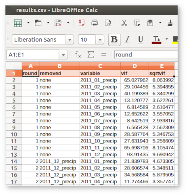

By default the VIF is calculated for each variable. If the user sets a VIF threshold value (maxvif) a stepwise variable selection procedure [2] is used whereby after computing the VIF for each explanatory variable, the variable with the highest VIF is removed. Next, the VIF values are computed again for the reduced set of variables. This will be repeated till the VIF is smaller than maxvif. This can thus be used to select a sub-set of variables for e.g., multiple regression analysis.
The user can optionally select one or more variables to be retained in the stepwise selection. For example, let's assume the user selects the variable bio_5 to be retained. If in any step this variable has the highest VIF, the variable with the next highest VIF will be removed instead (see the examples).
The user can set the 's' flag to only print the finally selected variables to the standard output (console). Note that this only works when the stepwise selection procedure is invoked, i.e., when the maxvif is set. This option makes it easier to use the output of r.vif in another function directly (see example ).
Using random sub-set of raster cells as input means that the vif values may vary between runs. If the sub-set is too small it may even lead to differences in variables selected when running the step-wise procedure. Special care should be taken when many of the equations are underdetermined (the value of vif is shown as Inf).
As an alternative, the user can set the f flag to evoke the 'low-memory option'. This will use the r.regression.multi function in the background to compute R2, the most memory demanding part of the computation. With this option, the addon can handle much larger data sets. The disadvantage is that it runs much slower.
g.region n=226000 s=168500 w=229500 e=298500
MAPS=`g.list type=raster pattern=*2011*precip sep=,` r.vif maps=$MAPS file=results1.csv maxvif=10
VIF round 1 -------------------------------------- variable vif sqrtvif 2011_01_precip 65.03 8.06 2011_02_precip 29.10 5.39 2011_03_precip 40.20 6.34 2011_04_precip 13.12 3.62 2011_05_precip 6.81 2.61 ... ... VIF round 7 -------------------------------------- variable vif sqrtvif 2011_01_precip 4.25 2.06 2011_04_precip 5.22 2.29 2011_05_precip 4.86 2.20 2011_06_precip 7.13 2.67 2011_07_precip 7.58 2.75 2011_08_precip 3.32 1.82 selected variables are: -------------------------------------- 2011_01_precip, 2011_04_precip, 2011_05_precip, 2011_06_precip, 2011_07_precip, 2011_08_precip Statistics are written to results.csv

MAPS=`g.list type=raster pattern=*2011*precip sep=,` r.vif maps=$MAPS maxvif=10 retain=2011_02_precip file=results2.csv
... ... VIF round 6 -------------------------------------- variable vif sqrtvif 2011_02_precip 9.29 3.05 2011_03_precip 9.02 3.00 2011_04_precip 6.30 2.51 2011_05_precip 4.99 2.23 2011_06_precip 9.72 3.12 2011_07_precip 8.36 2.89 2011_08_precip 3.30 1.82 selected variables are: -------------------------------------- 2011_02_precip, 2011_03_precip, 2011_04_precip, 2011_05_precip, 2011_06_precip, 2011_07_precip, 2011_08_precip Statistics are written to results2.csv
MAPS=`g.list type=raster pattern=*2011*precip sep=,` r.vif -s maps=$MAPS maxvif=10
2011_01_precip,2011_04_precip,2011_05_precip,2011_06_precip,2011_07_precip, 2011_08_precip
MAPS=`g.list type=raster pattern=*2011*precip sep=,` SELECTION=`r.vif -s maps=$MAPS maxvif=10` i.group group=group_example input=$SELECTION
Adding raster map <2011_01_precip@climate_1970_2012> to group Adding raster map <2011_04_precip@climate_1970_2012> to group Adding raster map <2011_05_precip@climate_1970_2012> to group Adding raster map <2011_06_precip@climate_1970_2012> to group Adding raster map <2011_07_precip@climate_1970_2012> to group Adding raster map <2011_08_precip@climate_1970_2012> to group
van Breugel, P., Friis, I., Demissew, S., Lillesø, J.-P. B., & Kindt, R. 2015. Current and Future Fire Regimes and Their Influence on Natural Vegetation in Ethiopia. Ecosystems. doi: 10.1007/s10021-015-9938-x.
[2] Craney, T.A., & Surles, J.G. 2002. Model-Dependent Variance Inflation Factor Cutoff Values. Quality Engineering 14: 391-403.